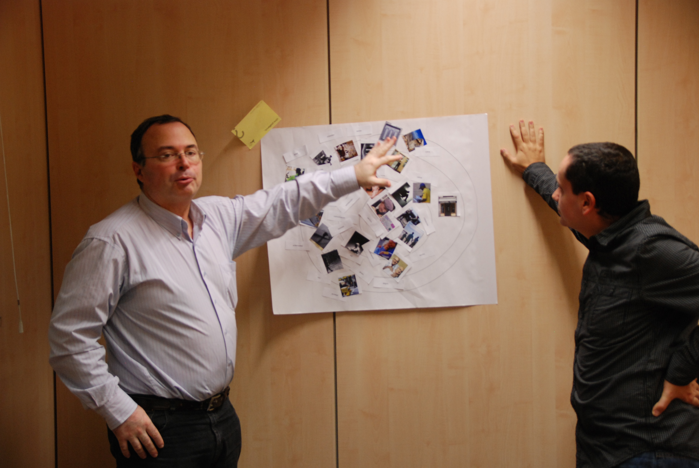

Context
In October 2011 I started a postgraduate course at h2i, Designit Spain own school for human centred innovation. There, together with other 15 students, I worked on several service innovation projects and learning more about the methodologies and tools to use in them. Among the different projects, I worked on a service innovation project for Correos, the Spanish postal service company in a multidiscplinary team of 4 people.
The traditional postal service market was decreasing and Correos contacted h2i hoping we could help them to come up with ways to cope with this situation. Correos thought postmen would had more free time due to the reduction on the amount of work and wanted us to come with ideas for services or tasks that postmen could do with this extra time.


What we did
We started the research phase having two main actors to gather information about. On one hand we had Correos and the posmen. We needed to understand if postmen really had free time and what kind of thing postmen could do in this free time. We also wanted to see how the delivery process looked like at that time. On the other hand, we wanted to know about the users, what their perception of Correos was and what their needs were regarding communication or how often they used postal services.
Our research approach consisted of 12 in-depth interviews to postmen and ex-postmen, as well as a few interviews to other Correos workers, such as personal of the offices and the people that deliver the mail from the central unit to the district units. We did shadowings to three postmen of different areas, including rural and urban. We did observational research at offices and units. We organized as well a co-creation session with 2 postmen.

To gather information from users, we conducted several in-depth interviews, as well as intercepts, and a co-creation session with users. Finally, we also had interviews with some of the competitors, as well as, conducting some interviews in mailing companies of other countries.
During this process, we created a very big post-its board with all the quotes that we collected. We clustered these quotes and found relations between them. At the same time we mapped in user journeys each of the shadowings we have conducted. Additionally, we analyzed the maps that we got from the two co-creation sessions.

We presented the results of the design research to Correos, who were satisfied and surprised with our findings.
We moved further in the process and transformed these areas of opportunity into a wide variety of creative “how might we?” challenges.
From all the challenges we created, we selected a few which seemed interesting to solve, and we created with them a challenge map. By asking “Why else...?”, additional related broader problem statements were uncovered from the seed challenge. Similarly, the “What’s stopping. . .?” question narrowed the problem into smaller, more tactical subproblems. After this process, we converged again into a selection of “how might we” that we used to ideate and generate a big number of ideas.
We selected four them by using some strategic design tools such as an action priority Matrix. With this matrix, we were able to identify which ideas were the most attractive, and being aware of the amount of effort that they would take to be implemented with the resources of Correos.
These four selected ideas were further developed. Finally, we did an storyboard of each one, and presented them at the other students and teachers at h2i.
At last, we evaluated these ideas using a Harris profile. We chose to further develop one of the ideas. The chosen idea consisted on a fast hyperlocal transportation system that responded to the need of detaching the modern city inhabitant from his items .
We maped the new service using a blue print , here we showed the touch points and the back-stage processes throughout the different phases of the service.

We end up the project by creating a video prototype to showcase the service and business model canvas and rough business plan to address the monetisation of the service.